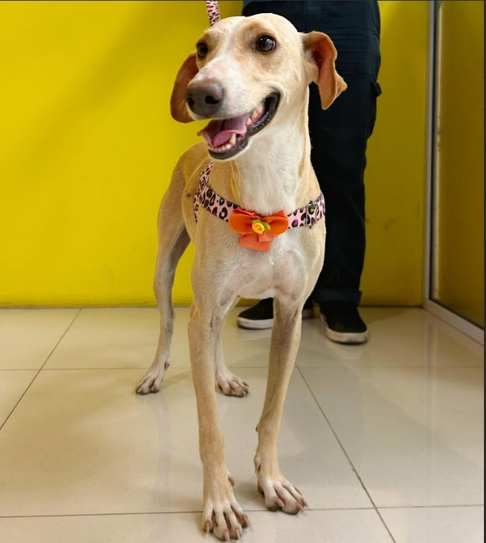
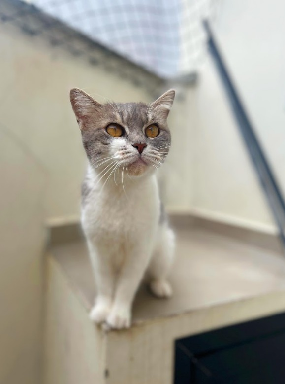

Nossos Animais
Conheça os adoráveis companheiros que estão esperando por um lar cheio de amor

Branca
Fêmea
2 anos
Porte G
Castrada
Vacinada
FELV
+
Luzia chegou até nós através de um pedido de ajuda, onde a pessoa relatava que tinha um "monstro" em sua casa. Quando fomos resgatar, descobrimos que esse "monstro" na verdade é uma linda princesa assustada e muito carinhosa!
Luzia é FELV + por isso precisa ser a única filha felina, ou ter outros irmãozinhos que
também tenham FELV+.

Mimi
Fêmea
1 ano
Gata
Castrada
Vacinada
FIV/FELV
-
Mimi foi abandonada em uma residência, viveu um tempo na rua até ser resgatada. É uma gatinha muito amorosa e carente!
Uma companheira doce e afetuosa. Negativa para FIV e FELV.
Pronto para Adotar?
Entre em contato conosco e transforme a vida de um animal! Cada adoção é uma nova chance de felicidade.